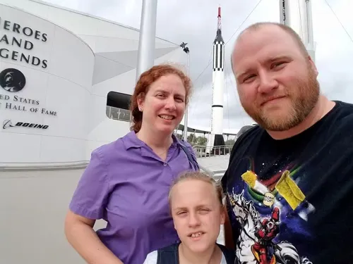
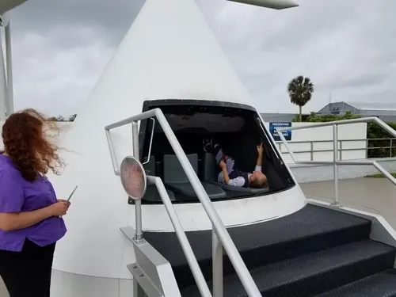
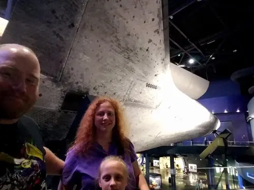
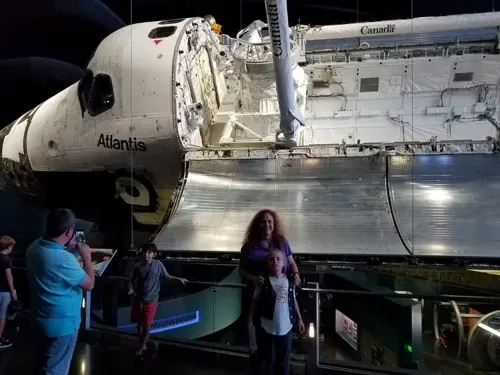
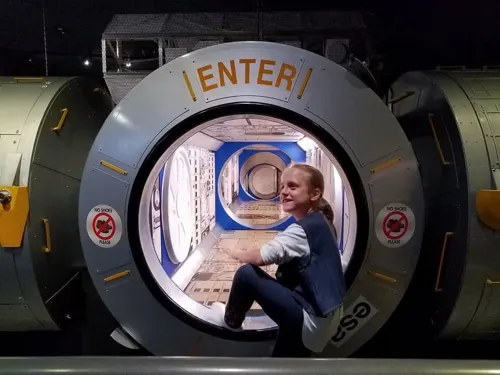
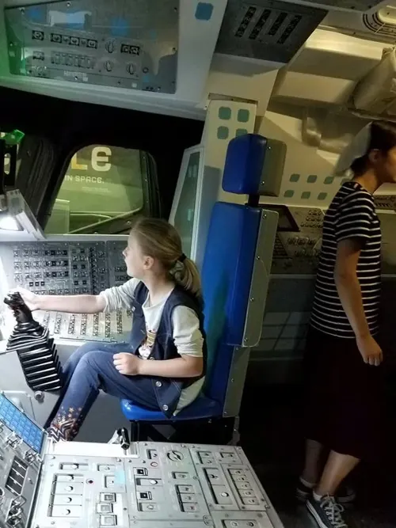
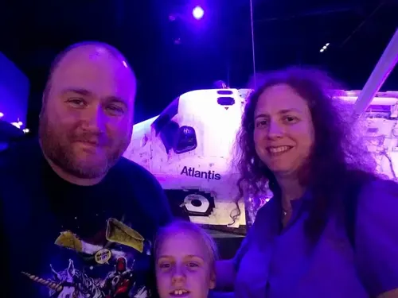
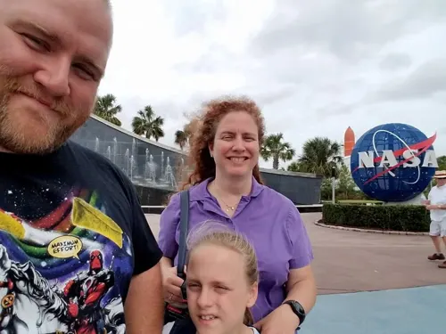

Kennedy Space Center (earlier visit)
Undated

On an earlier trip we made a detour to Kennedy Space Center on the way home.
Frames cover Heroes and Legends, the Atlantis exhibit, a capsule replica, a station-module walk-through, and a selfie by the NASA logo — with Jessica or Jasmine and my redhead companion in several shots.
















